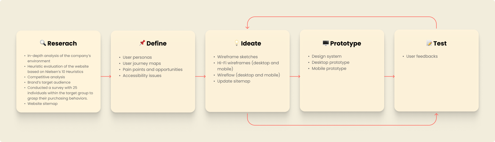

Ecodream Design eCommerce
Ecodream Design is an eCommerce website specialized in selling made in Italy, hand-crafted sustainable bags and related accessories.
Description
-
Purpose: identify usability and accessibility issues on Ecodream's website, then optimize the information architecture and redesign five key pages based on insights gained through the UX research process.
-
My role: UX/UI Designer
-
Collaboration: just me (helped and guided by my tutors' feedbacks)
-
Timeline: no due date
-
Tool: Figma
Process
Personas
I identified three female user personas across different age groups, reflecting the target demographics. Each persona represented different levels of tech proficiency and distinct purchasing behaviors.
(I'll show just one persona as a visual example)

User Journey Map
For each Persona, I developed a User Journey Map encompassing three distict scenarios. Based on the identified pain points, I highlighted key opportunities that would serve as the foundation for my eCommerce redesign strategy.

Accessibility
I then addressed all accessibility issues on the website by identifying three User Personas with disabilities and their corresponding User Journey Map, ensuring that the eCommerce platform meets accessibility standards.
Wireframes
In the wireframing phase, I began by sketching low-fidelity wireframes on paper. Once I had established a suitable design, I moved on creating high-fidelity wireframes on Figma.
This process was quite dynamic: as I was working on the site's UI, I encountered issues that weren't obvious on grayscale static wireframes. This led me to not stick to the wireframe I had designed previously and to explore other design options.
Design System

Final Design
The final result is a responsive design: it adapts seamlessly to both desktop and mobile devices.

Final thoughts
What I Learned
This was my first UX/UI design project, making it crucial for me to apply everything I had learned. Completing the project entirely on my own, without the support of a team, proved to be immensely valuable. I faced several challenges along the way, which forced me to solve problems indipendently through extensive research, learning from experienced designers, and adopting industry best practicies.
Each stage of the project was reviewed by a senior professional, which turned out to be essential for identifying both my strengths and areas for improvement; these feedbacks enabled me to adjust my approach and refine my workflow.